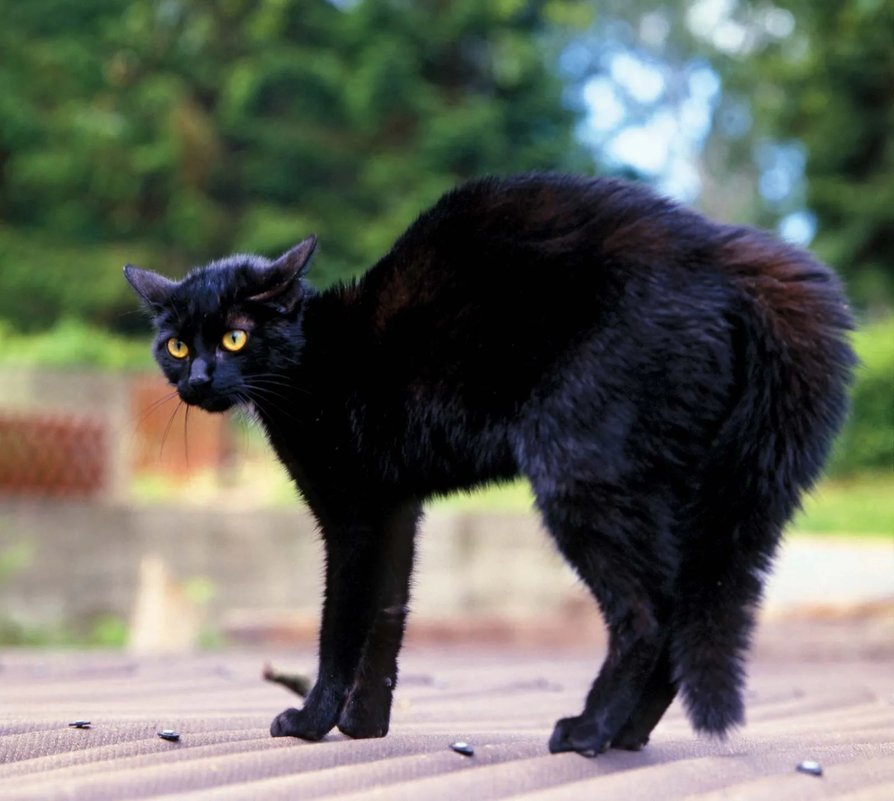

Angela's Cinamon Roll Recipe
Ingredient
For the dough:
- 3/4 cup warm milk
- 2 1/2 teaspoons yeast
- 3/4 cup granulated sugar
- 1 egg plus 1 egg yolk
- 3/4 cup butter
- 3 cups bread flour
For the filling:
- 2/3 cup dark brown sugar
- 1 1/2 table ground cinamon
- 3/4 cup butter
Instructions
- Mix the milk with the yeast,sugar,eggs
- Melt the butter and add to the mixture
- Add in the floor and mix until combined to a dough
- Knead the dough for about 10mins
- Transfer the dough into a large bowl and cover with plastic wrap. Leave it somewhere to rise for 2hrs
- After the dough has doubled in size, roll it out into a large rectangle
- Melt the butter for the filling and mix in the sugar and cinnamon
- spread the filling onto the dough then roll the dough into a swiss roll
- Cut the roll into 3cm sections and place flat into a baking tray
- Preheat the oven to 35oF or 180C,then bake the rolls for 20-25min until lightly brown
Nesting
- A
- B
- B1
- B2
- B2a
- B2aa
- B2ab
- B2b
- B2c
- B3
- B31
- B32
- C
I am a dog person
 A German Brown Dog
A German Brown Dog
I am a Cat Person

A black Cat
Bact to Top
<<<©Alfredo Distefano>>>